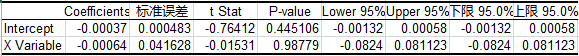

技术面分析
技术面分析是仅从证券的市场行为来分析证券价格未来变化趋势的方法。其中市场行为包括价格、成交量以及价量的时间序列等。
技术面分析是基于弱有效市场不成立的假设下认为，可以通过对于市场信息的处理战胜市场。
技术面分析的三个主要假设：
- 包容假设：市场行为包含一切信息。
- 这一假设认为，基本面信息对市场供求产生的影响已经充分反映在市场价格和成交量当中，在一般情况下，技术面分析可以代替基本面分析。
- 惯性假设：价格沿趋势波动
- 需要说明的是，这里的趋势指的价格的波动模式，当然单边势也是属于波动模式的一种，但不是全部。技术面分析即利用价格波动的模式预测未来的价格。
- 重复假设：历史会重复
- 俗话说「江山易改，本性难移」，上述假设的合理性在于，人的行为模型在很多情况下不受人的主观能动性的控制，因而会有重复性的市场行为出现。
市场信息
市场原始信息
开盘价：某种证券在证券交易所每个交易日开市后的第一笔每股买卖成交价格。世界上大多数证券交易所都采用成交额最大原则来确定开盘价。
最高价：某种证券当日交易中最高成交价格。
最低价：某种证券当日交易中最低成交价格。
收盘价：某种证券在交易所一天交易活动结束前最后一笔交易的成交价格。
结算价：结算价是当天交易量与交易价格的一个加权平均获得的用于当日计算并交割盈亏的基准价，例如目前股指期货结算价为当日最后一个小时的成交价格按照交易量的加权平均价。
成交量：在某一时段内交易证券数。
成交额：在某一时段内交易证券金额。
持仓量：多空双方开立的还未实行反向平仓操作的合约数量总和。
仓差：持仓量与昨日收盘价对应的持仓量的差。
外盘：买家以卖家的卖出价而买入成交，成交价为申卖价，说明买盘比较积极。
内盘：卖家以买家的买入价而卖出成交，成交价为申买价，说明卖盘比较积极。
市场行为
买入
卖出
多开：多头开仓
多平：多头平仓
空开：空头开仓
空平：空头平仓
双开：多空同时开仓
双平：多空同时平仓
多换：多头持仓交换
空换：空头持仓交换
市场指标信息
涨跌幅：当日交易价格与上一交易日收盘价格的变动幅度。
振幅：(最高价 - 最低价) / 上一交易日收盘价 * 100%
均价：当日成交金额 / 当日成交股数
量比：当日开市后平均每分钟的成交量与过去5个交易日平均每分钟成交量之比。
委比：(委买手数 － 委卖手数) / (委买手数 + 委卖手数) * 100%, 通常计算五档委买委卖。
多空指标（分时图红绿柱）：(当前本类指数所有上涨股票的最新价之和 - 当前本类指数所有下跌股票的最新价之和) / 本类指数所有股票的最新价之和 * 100
涨跌率：市场上涨家数 / 下跌家数
换手率：当日成交股数 / 当日流通股本
白线： 成份股经加权计算的指数
黄线： 成份股未经加权计算的指数

市场信息简易使用方法
市场信息可以通过金融市场软件服务商简易地获取，以下是一副典型的个股分时图信息。
我们来结合图中数字具体说明
[1] 在分时图的左边部分是集合竞价走势图，交易所规定每个交易日开盘期间进行集合竞价，深、沪两市的集合竞价时间为交易日上午9：15至9：25(上交所收盘期间采用连续竞价并以最后一分钟的)。9:25公布集合竞价结果，即开盘价。集合竞价最终成交价采用最大化成交金额原则，在集合竞价期间右方委托盘显示若以当前报价状况的模拟成交价、成交数量(同时显示在买一和卖一价位)及在此价位未成交数量(若卖方存在未成交显示在卖二档位，否则显示在买二档位)。9:15-9:20投资者可对申报进行撤单操作，因而在此期间模拟报价通常波动较大，不乏大量试盘行为。
[2] 9:20-9:25期间所有申报均不可在开盘前撤单，市场所有的报价行为可视作真实报价，随着报价逐渐增多，模拟成交数量逐渐增多，模拟成交价格趋于稳定。这段时间的模拟报价走势显示了资金在开盘阶段的博弈结果，对开盘后的价格走势有较强的指导作用，如果观察到临近9:25时模拟报价不断上升，且委比始终为正，则开盘后价格继续上升的可能性很大(如上图的贵研铂业)，反之亦然。
[3] 这一区域显示的是集合竞价期间模拟成交数量和未成交数量，如显示红柱则表明这一时刻委比为正，绿柱代表委比为负，委比与价格走势呈现正相关的关系，如集合竞价期间委比长时间为正则价格出现推升的概率很大。
[4] 这一区域显示的是成交量，通常情况下成交量呈现两头高(开盘和收盘)、中间低的特征，如出现反常状况则盘中大幅震荡的概率很大，需特别留意。
[5] 白线显示的是个股的最新报价，交易所在正常交易期间采取连续报价的，以价格优先、时间优先为撮合标准。例如统一价格，成交先后顺序为：隔夜委托(前一交易日16:45之后的委托)>集合竞价期间委托>正常交易时间委托。因而隔夜委托通常用于“抢一字板”。
[6] 在个股分时图中，黄线显示的是均价；在指数分时图中，黄线显示的是未经加权计算的指数报价。
[7] 委比对于未来价格走势有正向预测作用。委比越高表明买入意愿越强于卖出意愿。然而委托报价并非真实成交，许多挂单其真实意图截然相反。当如下图的大单出现在34.50的价位时，市场认为买入力量增强于是出现了许多更高的报价小单，主力资金可以借此实现高价出货并在出货完成后撤销低位报价单。当此类大单出现时需观察成交情况和撤单状况。

通常情况下，有很大买入需求的投资者并不会将自己的购买意愿通过挂单为市场所察觉，在发达国家金融市场有冰山挂单、暗盘等专为其提供服务，在中国金融市场，他们也通常会进行分批操作，并尽可能扰乱最终交易所发布的主买主卖性质，隐蔽性很强。在下图中，主力资金便已多次建仓累计近十万股，即3,000余万元。
[8] 这一列显示委托数量相比上一时刻的变化量。
[9] 市场信息。
[10]公共信息。
[11]成交信息。其中“B”代表主买成交，计入外盘，“S”代表主卖成交，计入内盘。在普通的level-1行情中，交易所只发布每个一段时间的成交汇总，而主买主卖性质由该时段最后一笔成交的性质决定，因此交易所发布的主买主卖性质与实际性质很有可能存在偏差，需要结合[8]委托盘变化量进行综合考虑。如下图所示，我们结合委托盘的变化量发现，最新的288手成交中有大约30%是主买的，有70%是主卖的。

下图则表明上一时刻有41手主买成交，买一价位发生了200手撤单，买二价位发成了19手撤单。

信息发布缺陷的存在导致了蓄意制造相反性质成交的操盘手法，如下图所示，1569手的主卖大单实际大部分是主买单，如果只看交易所发布的成交信息则会误以为大单出货。

[12]“笔”：最新成交信息；“价”：成交价位分布图，如下图所示：
“细”：逐笔成交信息，适用于level-2行情；“日”：日线；“势”：分时图；“联”：关联指数分时图；“值”：涨跌停价位等关键值,如下图所示：
“主”：当前市场主要动向，如下图所示：

“筹”：筹码分布图，如下图所示，具体应用可参见关于回撤位的案例讨论：
[13]点击不同栏目可获得分时技术指标，包括量比、多空指标、分时MACD等统计信息。
[14]点击拓展可获得关联证券的最新报价(相同行业、相同地区、相同概念等)。
这是一副典型的个股日K线图信息

[1]显示复权状况，前复权以当前股本为基准向前进行权息复位以确保股价的连续性，后复权以初始股本为基准进行复权，复权以指定日期股本为基准进行复权。
[2]显示K线技术指标具体数字。
[3]点击信息地雷可获得当日历史信息。
[4]K线技术指标(图为均线)。
[5]成交量及5,10日成交量均线。
[6]技术指标区(图为MACD)。
[7]点击不同栏目可获得各技术指标。
案例讨论 莫建军股价操纵案：集合竞价蓄势 盘中推高出货
虚假买入申报推高股价，随后撤销买入申报并在高位卖出股票
某档股票在开盘前的集合竞价阶段有大量涨停价买单，而在开盘后又屡现多笔高价买单，你会不会奋不顾身地“杀”进去？相信很多人的回答是肯定的。
莫建军正是利用人们这种“跟大资金动向操作”的心理，用自己的“大资金”频繁申报高价买单，待其他人跟风推高股价后，便迅速撤下已挂的买单，如此反复，待股价达到一定高位时，抛出自己手中持有的股票，从而获利。
从中国证监会有关部门获得的资讯显示，莫建军在2007年的9个交易日中，通过频繁高价买入申报和撤单行为，共交易7档股票，其中有5档股票盈利176.24万元；2档股票亏损98.76万元，合计盈利77.48万元。
证监会认定，莫建军的上述行为构成了《证券法》中的“操纵证券市场”，没收违法所得并处一倍罚款，《行政处罚决定书》已于近日送达。这是截至目前证监会行政处罚的第四例以虚假申报方式短线操纵市场案。
集合竞价“蓄势”
“莫建军这个人非常聪明，也非常专业，在证券市场上做了很多年。”一位接近莫建军的人士说。本报记者看到的《行政处罚决定书》显示，最终认定莫建军9日内操纵7档股票。
一位接近该案调查组的人士介绍，与此前的周建明案等不同的是，莫进行操纵不是集中在某个时间段，而是“全天候”进行，集合竞价、连续竞价、盘中、盘尾均有操作，甚至各时段互相作用达成推高股价并“出货”的目的。
从证监会认定的莫建军操纵行为看，其习惯在每日开盘前的集合竞价时段(9∶15-9∶25)开始“蓄势”。2007年3月9日，9∶15∶12，莫建军分两笔以综艺股份(15.59,0.48,3.18%)当日涨停价位17.15元申报买入117，300股，但分别在9∶18∶43和9∶18∶31撤单。但在9∶24∶21，莫帐户又以15.65元申报卖出该股票13，200股。
交易所的统计资料显示，集合竞价阶段该档股票的市场买入总申报量为379，000股、总撤单137，100股，莫的帐户买入申报量占市场总申报量的65.20%，买入申报撤单量占市场总撤单量的85.56%。
在大量“假高价买单”的干扰下，当天综艺股份以15.62元开盘，并迅速摸高至当日最高价16.19元。
前述接近调查人员人士表示，“按照市场常态，买入前五档上的申报量大多比较均衡，且总量不会很大，假定共有一百万股的申报买入量。但此时如有人申报一千万股进去，结果就像一块石头扔进水里，会引起其它投资者跟风，从而增加虚假推动量。”
在最终认定的莫建军操纵的7档股票中，有6档股票均在集合竞价阶段进行过大量虚假申报和撤单。在2007年5月9日操纵高鸿股份(9.66,0.20,2.11%)股票过程中，莫建军也是先在集合竞价阶段大量申报买入并撤单。
9∶15∶07，以当日涨停价格15.79元申报买入63，100股；9∶18∶30，以15.00元申报买入66，500股，上述两笔申报分别在9∶18∶08和9∶19∶06撤单。9∶23∶45，莫以14.10元申报买入70，700股，随后以委托价全部成交。
“从这个申买价来看，他清楚地知道，如果他不虚报买单，这档股票应该是什么价位。”前述人士说。
从操作手法上看，莫建军明显是在利用目前的交易机制上的便利：9∶15到9∶25之间，此时能申报也能撤单，即以涨停价申报买单，把集合竞价推高，9∶25以后就只能申报不能撤单，故在此时间之前把涨停板申报价格撤掉，但较高的集合竞价已经形成；9∶25之后或9∶30开盘时突然卖出股票并获利。
盘中推高出货
集合竞价阶段的蓄势，为盘中出货打开了一定的股价空间。
来自交易所的交易资料显示，2007年3月9日，莫建军在集合竞价阶段频繁对综艺股份申报、撤单、未成交1股之后，在盘中开始了“六指琴魔”般的操纵表演。
9∶37∶29至9∶59∶48，莫的帐户连续8笔申报买入，共计1，552，000股，申报价格从第1笔的15.5元提高到第8笔的15.96元，之后全部撤单，撤单距申报时间平均1分03秒，最短仅10秒。在此期间，该股票的成交价格从莫申报前的15.57元上升到申报后的16.02元。
与此同时，9∶41∶18至10∶16∶43，莫以均价15.96元卖出10笔，共计145，889股。至此，一波“申报——推高——撤单——卖出”的完美操纵暂告一段落。
当然，表演远未结束。10∶17∶54至10∶43∶56，莫连续5笔申报买入，共计1，766，000股，申报价格从15.70元至15.95元不等，后全部撤单。在股价上升过程中，10∶22∶31至10∶46∶59，莫以均价15.92元卖出15笔，共计158，050股。如此反复操作。
根据证监会的调查结果，莫用自己实名帐户申报买入综艺股份股票29笔，共计10，730，100股，但全部成功撤单。买入申报撤单量占该股票当日市场买入总申报量的57.07%。
更有甚者，2007年6月11日，莫申买长城电工(12.00,0.42,3.63%)股票37笔，撤单34笔，买入申报撤单量占该股票当日市场买入总申报量的65.39%。次日，莫又申报买入5笔长城电工，并全部撤单。其间，莫屡次在股价推高后将持有股票卖出获利。
“调查范围一般是在第一档跟第十档之间，(莫建军)的买单一般是挂在三档以后，(因为)成交机会比较小。这样做的结果是形成虚拟买盘汹涌的假像，从而吸引其他投资者跟进，达到维持股价或意图抬高股价的目的。”前述人员说，在连续进行申买和撤单操作以后，一般都会有一个反向操作，即抛卖单出来。
操纵认定
《行政处罚决定书》显示，莫建军的上述行为违反了《证券法》第七十七条第一款第四项关于禁止“以其他手段操纵证券市场”的规定，构成了操纵证券市场行为。
一位元接近监管部门的人士对本报记者说，莫并不承认自己的行为是“操纵市场”。在莫看来，在2007年用此种手法操作股票“非常普遍”，是一种交易技巧，并不属于违法行为。
“从审理来看，最终认定的行为只是(莫操作股票)行为的一部分。从2006年开户以来，他就一直采取这种行为，但最终只对能查实认定、比较典型的交易作了处罚。”前述人士说。
在收到《行政处罚告知书》后，莫建军即申请了听证。在10月20日的听证会上，莫建军的代理律师提出三点疑问，其中之一是认为莫的行为不是“操纵证券市场”。对此，处罚委相关人士表示，该律师对法条理解有误。
从莫建军的股票交易记录来看，多次申报买入，但均在短时间内全部撤单，成交量为零或者占比非常小，但相关股票的价格均随其频繁申报买入而上涨。
“操纵市场最本质的特征是以不正当手段，影响证券交易价格或者证券交易量，扰乱证券市场秩序。”一位上交所人士说，操纵行为人为地扭曲证券市场的价格形成机制，造成证券市场供求假像，破坏证券市场价格发现功能、风险管理功能和资源配置功能。
至于操纵手法，随著市场发展已经是花样翻新，在《证券法》里适应的法条是“以其他手段操纵市场”。
莫的代理律师提的第二个疑问是时效性，即莫的行为已经过了两年的诉讼期，不应再予追究。
“证监会是以发现时间来算的。以违法行为结束为时点，到发现的时间点之间只要不超过两年都是可以的，而该案是2008年4月20日正式立案，发现的时间点就更早，因此与2007年3月相距没超过两年。”一位参与了听证会人士说。
莫律师还对违法所得的计算提出了质疑，认为莫的建仓行为与卖出行为可能有一定时间差，有一档股票间隔了十几天，故认定违法所得应只计算当天拉抬股价所造成的差额即可。
监管部门的大致计算标准是，卖出(或持有)时点的市值减去买入时的金额。“计算违法所得或采取罚没处罚措施的惯例是，只要认定行为的一部分违法，整个行为视作违法。比如对会计师处罚，通常是没收全年费用。因此，最终没有采纳律师意见。”前述人士说。
警惕“连环”操纵
从监管部门公布的情况来看，以虚假申报、特定时段操纵等为主的短线操纵正风靡市场。
仔细分析已处罚的四例虚假申报操纵案会发现，短线操纵的手段正在不断变化，《证券市场操纵行为认定指引》(下称《认定指引》)中列举的多种操纵形式，从最初的单一使用，逐步发展到多种手法套用，相互作用，连环操纵。
第一例虚假申报类操纵市场案——周建明的手法较单纯。即在正常交易时段，利用他人帐户，在较短时间内连续挂出多笔大额买单，申报价格也逐笔提高，待其他投资者跟进买入后，迅速撤单，随即以当时高价卖出手中早已持有的股票，顺利获利。
卢道军的手法相对复杂些，是用两个以上的帐户组来进行操纵。当然，这些联动帐户是较容易被交易所的“电子眼”侦察到的。
张建雄操纵市场案也是归为虚假申报类操纵，所不同的是，张比周更有“气魄”，其最惯用的手段是把某档股票从跌停直接拉到涨停，再出货。2008年7月3日， ST源药由跌停板被拉到涨停板，就是张建雄的“杰作”。
除了在正常交易时段频繁挂单-撤单-卖出外，张建雄还在开盘前的集合竞价阶段“玩花活儿”。
2008年7月4日，也就是ST源药涨停次日，9时18分22秒，正值开盘集合竞价时，张以涨停价5.7元挂出99万股买单，继续制造无量涨停的格局，40秒后撤单。9时24分53秒，张建雄将180万股ST源药股票以5.68元、略低于涨停价的价格全部卖出。
路数已经出来了：头天拉涨停，制造对次日继续涨停的幻象，并在次日集合竞价阶段继续“忽悠”，待其他投资者以涨停价冲进来，其在第一时间以略低于涨停价的价格挂出卖单，保证成交。
到莫建军，几乎是全时段操作，从集合竞价到连续竞价，从盘中到盘尾，不放过任何一个时机。本报记者从参与该案调查的人员处得知，莫在尾盘也有多次操作行为，只是最终未予认定。“在快收市的时候挂高价买单，让人预期有大资金进入，次日该股票会继续上涨，这样投资者就会在次日跟进，这也是很常见的一种操作股票的手法。”一位在市场上混迹十年之久的“资深股民”如是说。
趋势理论
利用惯性假设，根据价格波动的规律，通过假设趋势继续延续的方法，运用骑乘趋势的方法预测价格，当然如果发生趋势转变的时候需要止损。
最为显然的一种惯性假设即后一个交易日的涨跌幅与前一个交易日的涨跌幅正相关，换言之，这可以通过股票价格时间序列的分析进行验证。以上证指数为例，在早年阶段其走势具有明显的惯性，从近几年的数据来看惯性已经明显减弱，在统计意义上不显著。
最近5575个交易日

最近2579个交易日

最近1579个交易日

最近579个交易日

形态理论
利用重复假设，通过寻找历史走势中相似的形态，运用历史形态之后的价格走势预测当前形态之后的价格走势。
K线形态
最简单的形态理论即为K线理论，即通过寻找历史市场信息中相近的K线或K线组合，运用在它们之后的价格表现来预测当前K线状态下的价格表现。
K线源于日本德川幕府时代（1603～1867年），被当时日本米市的商人用来记录米市的行情与价格波动，后因其细腻独到的标画方式而被引入到金融市场。
单个K线由开盘价、最高价、最低价和收盘价组成，如果收盘价高于收盘价称为阳线(红色柱状)，如果收盘价低于开盘价称为阴线(绿色柱状)。开盘价与收盘价之间的部分称为K线的实体，实体上方部分称为上影线，实体下方部分称为下影线。

以单个K线形态阴线「射击之星」为例，射击之星的含义为价格呈现冲高回落的态势，K线具有明显的上影线，用量化语言表述为：
- 收盘价 < 开盘价
- (最高价 - 开盘价) > 2 * (开盘价 - 收盘价)
- 开盘价 – 收盘价 > 收盘价 – 最低价

通过对2010.1.1 – 2013年12月31日的A股数据进行回测，我们发现符合上述条件的30,479个案例第二个交易日的期望收益为 -0.1952%，因而射击之星经常被看作是趋势反转的信号。
同样地，在大阴线之后出现T字线，或者在大阳线之后出现墓碑十字线，都是趋势反转的信号。

K线组合
三白武士
三飞乌鸦

早晨之星

黄昏之星
阳包阴

阴包阳

对称三角形
上升三角形
下降三角形
矩形

技术指标
技术指标分析的方法，即应用一定的数学公式，对原始数据进行处理，得出指标值，将指标值绘成图标，从定量的角度对股市进行预测的方法。
技术指标分为以下几个类别：
- 趋势型指标：移动平均线(MA)，指数平滑异同平均线(MACD)，布林轨道线(BOLL)
- 超买超卖型指标：威廉指标(WMS)，随机指标(KDJ)，相对强弱指标(RSI)，乖离率指标(BIAS)
- 人气型指标：心理线指标(PSY)，能量潮指标(OBV)
从本质而言，运用技术指标的本质是挖掘价格的趋势并预测趋势的改变。以移动平均线为例，资产价格在移动平均线之上波动可以被认为是上升趋势，一旦价格下破移动平均线则说明上升趋势逆转。其操作策略与回测的思想即，在移动平均线之上选择持有，下破移动平均线进行卖出操作。
不同的技术指标在预测趋势方面特性不同，例如长期的移动平均线和MACD在预测大趋势方面准确性较高，但反应速度较慢，适合于波动较为缓慢的股票市场，而短期的移动平均线和KDJ反应速度迅速但准确性一般，适合于运用在商品期货以及外汇市场。
技术指标背离即技术指标的运行方向与价格运行方向背道而驰，例如MACD在价格创新高的情况下并未创出新高。技术指标背离现象是较为可靠的转势信号。
如多个不同技术指标同时发出相同的信号则正确率较高，如存在量能的配合则有效性更高。
简单移动平均线(SMA)
简单移动平均线计算指定数日收盘价的平均值，反映一段时间内平均的持仓成本。其计算公式为：
SMA(n) = 最近n日收盘价之和 / n
n通常取5, 10, 20, 30, 60, 120, 250
n取值较小为短期平均线，n取值较大为长期平均线。
指标灵敏度与n取值呈负相关，正确率与n取值呈正相关。
在使用时通常将最新收盘价与SMA(n)进行比较，如收盘价高于SMA(n)则代表上升趋势，如收盘价低于SMA(n)则代表下跌趋势，如果收盘价上穿或下破SMA(n)则相应级别的趋势可能发生逆转。
当价格回调至SMA(n)附近时
短期平均线从下往上穿越长期平均线称为黄金交叉，此为确定上升趋势的开始，可进行买入操作。
短期平均线从上往下穿越长期平均线称为死亡交叉，此为确定下跌趋势的开始，可进行卖出操作。
多条均线粘连时，市场没有趋势，一旦突破震荡区间则维持趋势的动力很强。
SMA(n)反映平均持仓成本，该指标适用于强趋势型行情，例如在资金推动型的股票市场和债券市场中使用将获得较高的正确率。而在震荡行情中，多条均线粘连状态下难以进行有效的判断。
布林轨道线(BOLL)
布林轨道是由移动平均线变化而来，并经过改良移动平均线通道上下限的计算方法，以标准差的计算方法，从而令上下限的波幅跟随市况波动程度而改变。其计算公式为：
中轨 = 上一交易日的MA
上轨 = 中轨 + 2 * MD
下轨 = 中轨 - 2 * MD
其中MA为过去n日平均收盘价格，MD为过去n交易日收盘价标准差。
n通常取10, 20
布林轨道线反映市场状况的超买或超卖状况，令投资者对市况提高警觉。在图标中以三条曲线显示，从上至下依次称为上轨、中轨和下轨。
当价格升至上轨时为卖出信号，价格将受阻回落。如果价格升破上轨则说明趋势转强，需止损。
当价格跌至下轨时为买入信号，价格将企稳回升。如果价格跌破下轨则说明趋势转弱，需止损。
若价格第二次上冲上轨或下探下轨受阻则趋势随时发生逆转。
当布林轨道明线收窄时，市场无趋势区间震荡，等待方向性选择。
该技术指标的有效性依赖与趋势期间价格变动速率的一致性，认为价格的过快变动将会回归到正常趋势中，并不能适应波动率迅速变化的市场。该指标在原生品市场的有效性高于其在衍生品市场的有效性。
该技术指标隐含的价格波动短期内呈正态分布的假设使其在无法应对价格肥尾分布以及非连续变化。
指数平滑异同平均线(MACD)
指数平滑异同平均线是由移动平均线变化而来的辅助指标，在各大技术指标中运用较多，适用范围较广。该指标的重点在于比较长期趋势与短期趋势的差异，用短期趋势的变化来对长期趋势进行预测。
首先运用两条移动平均线，一条为短期平均线，一条为长期平均线，通常情况下默认使用12日均线和26日均线。在价位波动时，短期平均线较为敏感，长期平均线反应较慢，两者的差异在价位大幅波动时扩散，反之则收窄。
DIFF = EMA(LONG) - EMA(SHORT)
DEA = EMA(DIFF)
MACD = DIFF - DEA
DEA的均线日数默认为9
在图表中，将DIFF和DEA连成线，MACD则以柱状的形式展示，基准轴为零轴。
DIFF在0轴之上表明均线多头排列，上升趋势；在0轴之下表明均线空头排列，下跌趋势。
DIFF向上穿过0轴即均线理论中的黄金交叉；向下穿过0轴即均线理论中的死亡交叉。
DIFF向上穿过DEA为黄金交叉(即MACD上穿0轴)；DIFF向下穿过DEA为死亡交叉(即MACD下破0轴)。
若黄金交叉发生在0轴之上，意味著升势一浪高于一浪，是强烈买入信号，若死亡交叉发生在零轴之下则是强烈卖出信号。
若黄金交叉发生在0轴以下或者死亡交叉发生在0轴之上则视作弱趋势反转信号。
若DIFF和DEA均在零轴之上且远离零轴，价格一浪高于一浪，但MACD缺一浪低于一浪，是趋势由升转跌的信号。
若DIFF和DEA均在零轴以下且远离零轴，价格一浪低于一浪，但MACD缺一浪高于一浪，是趋势由跌转升的信号。
MACD指标相较均线理论反应灵敏度更高，均线理论往往在相反趋势形成初期才发出信号，MACD则在当前趋势的末期(趋势减缓期)即提前发出信号，在资金推动型市场中能够提前观察到趋势推动力量的衰减，有助于交易者进行提前判断。12,26,9的缺省参数设置是“性价比”最高的参数设置，不过其灵敏度低于随机指标(KDJ)。
随机指标(KDJ)
如果证券价格经常能以接近短期最高价收市，该证券在近期处于强势，反之如果证券价格经常以接近短期最低价收市，该证券在近期处于弱势。随机指标就是根据上述理念涉及而成，指标计算方式为：
n日RSV = (Cn - Ln) / (Hn - Ln) * 100
其中Cn为第n日收盘价；Ln为n日内的最低价；Hn为n日内的最高价。
0 =< RSV <= 100
当日K值 = 2/3 * 前一日K值 + 1/3 * 当日RSV
当日D值 = 2/3 * 前一日D值 + 1/3 * 当日K值
当日J值 = 3 * 当日K值 - 2 * 当日D值
若无前一日K值与D值，则分别用50来代替。
在图表中，将K，D，J值分别连成K，D，J线，基准线为50。
对于价格改变灵敏度：J线 > D线 > K线
80以上为超买区，20以下为超卖区。
快速线金叉慢速线为买入信号，快速线死叉慢速线为卖出信号。
随机指标与价格走势发生背离为趋势反转信号。
随机指标善于捕捉走势逆转的那一刻，灵敏度极高，因而在大多数价格顶部与底部处随机指标均正确、及时地发出了信号，但这一指标的缺陷是发出信号的频率较高导致噪声过多，大部分信号并非发生在趋势转折点。
相对强弱指标(RSI)
相对强弱指数是一项领先的动量指标，反映一段时间内上升平均幅度与下跌平均幅度的比率。其计算方式为：
RSI(n) ＝ A / (A＋B) × 100%
其中A表示n天中价格上升时涨幅的总和，而B则价格下跌时跌幅的总和。
n通常取14，也可取9或25。
指标灵敏度与n取值呈负相关，正确率与n取值呈正相关。
0 <= RSI(n) <= 100，RSI高代表升势，RSI低代表跌势。
这一比率类的指标有效排除了绝对波动率的干扰，适用范围较广。其具体的使用方法为：
当RSI升至70时，市场进入超买区，当升至80以上则进入了极度超买区。
当RSI跌至30时，市场进入超卖区，当跌至20以下则进入了极度超卖区。
超卖超卖现象发生时，趋势逆转的可能性较大。
当RSI与价格走势发生背离现象时，趋势逆转的可能性很大。
该指标适用于弱趋势震荡行情，趋势形成通常较为脆弱容易逆转，在外汇市场和贵金属市场的短期分钟线使用较为有效。不适用于强趋势型行情，RSI的逆转预测作用错误率很高，即使出现极度超买超卖或多次背离也无法准确预测转折点，因而在国债市场和股票市场的常周期分时中使用较少。
案例讨论：量价关系
在对成交量是否增加以及价格是否上升进行枚举分类可以得到四个不同的类别：
放量上升
根据供给需求模型，价量齐升通常体现了需求的提升
产生于2010年10月的上升行情便是一个经典的放量上升的案例，当月上证指数上升了12.18%，资料显示，随著经济资料回暖，仅十月初资金流入超过200亿元。

缩量上升
不同于供给增加，缩量上升反映的主要是需求端的变动，由供给需求模型可以看出，供给的减少导致了缩量上升的结果。

在庄股时代中，由于筹码大部分集中在庄家手中，在他们还没有出货之前，股价通常呈现缩量上升的态势。
还有一个典型的案例便是发生在2011年4月，当时指数连创新高但是成交量却一直萎靡不振，为后市的下跌埋下了伏笔。

放量下跌
由供给增加带来的结果是放量下跌，这与由需求上升带来的结果截然相反。

2013年钱荒即是由供给增加导致的放量下跌。

缩量下跌
这一现象，也就是大家经常听到的阴跌，是由需求减少造成的。这一现象的产生按时了供给压力的减缓，即可能是由于出售方希望等待下一个出货良机的暂时性减缓抛售，其后往往伴随著又一轮的放量下跌，也可能是由于价格过低导致供给方的惜售，价格的下跌仅是由于需求不足造成。而如果在经历了一段事

沪深股市在过去的几年中除了2010年双十一的暴跌、2011年美债危机以及2013年年中的钱荒等几次事件出现了放量下跌的现象外，其余情况多以缩量下跌为主，显示出A股市场需求，即资金面的严重紧张，可能也在一定程度上导致了小市值股票的繁荣。
案例讨论：曲线移动和沿曲线移动
在供给需求模型中，供给方或者需求方的曲线移动都将导致最终市场均衡点沿著曲线的移动。这里需要明确的是曲线移动和沿曲线移动的区别。
曲线移动代表的是激励的改变，是一种主动的改变，亦即在每个价格水准上，供给或者需求的改变。例如，由利比亚战争导致的石油减产是一种主动的，在每一个价格水准上供给量都下降的供给减少。
沿曲线移动并没有激励变化，是一种被动的改变，是因为另一方曲线的移动导致的市场均衡点的变化。例如，2008年石油暴跌引起沙乌地阿拉伯的石油减产就是一种被动的，沿著曲线移动的供给量减少。


与此同时，我们需要认识到，在有效市场中，曲线移动带来的沿曲线移动的过程是暂态的，这也就导致了价格在新消息发布之后的跳变。然而在并非有效的市场中，上述过程是逐渐进行的，这也是技术分析中所言“价格沿趋势波动”的原因之一。
案例讨论：浅谈回撤理论
在资本市场中我们经常会看到如下技术分析：“某品种目前触及**回撤位，预计在此位置将会有较大支撑/压力，建议买入/卖出”。然而目前对于回撤理论的有效性探讨较少，本文将从均衡的角度出发，寻找回撤位背后的理论支持。 回撤位即某一品种的价格在经过一波上涨或下跌之后，产生反方向的调整后达到的位置，x-回撤位即价格回吐了前期涨跌幅的x，（例如0.5-回撤位就是价格回吐了前期涨跌幅的一半）。简单起见，我们仅讨论上升之后的回撤。 在这里用到的一个重要的测定指标为筹码成本，亦即在价格波动过程中价格加权成交量的平均值，例如当价格大于筹码成本且价格上升的时候，新增的成交将会提高筹码成本。
一、
情景假设：在价格波动的过程中，成交量恒定且筹码仅在上升的过程中堆积，即当价格从k涨至k + 1时，筹码成本分布服从U(k, k + 1) 均衡条件：价格达到x-回撤位时，盈利筹码数量= 亏损筹码数量 方程：x = 1 – x 解得：x = 0.5
二、
情景假设：在价格波动的过程中，成交量恒定，筹码在上升和下降途中都会堆积，即当价格从k涨至k + 1，随后价格又跌至了k + x，那么(k + x, k + 1)的分布密度是(k, k + x)的2倍 均衡条件：价格达到x-回撤位时，盈利筹码数量= 亏损筹码数量 方程：x = 2 * (1 – x) 解得：x = 2 / 3 = 0.67
三、
情景假设：在价格波动的过程中，成交量相对价格有正相关性，假设价格从k涨至k + 1，随后价格又跌至了k + x，那么(k + x, k + 1)的分布密度是(k, k + x)的3倍 方程：x = 3 * (1 – x) 解得：x = 3 / 4 = 0.75
四、
情景假设：在价格波动的过程中，成交量恒定，筹码在上升和下降途中都会堆积，当价格到达x-回撤位时，盈利筹码占x，平均单位盈利x / 2， 亏损筹码占(1 – x) 2，平均单位亏损(1 – x) / 2 均衡条件：价格达到x-回撤位时，净盈利金额= 0，即盈利金额= 亏损金额 方程： x x / 2 = (1 – x) 2 (1 – x) / 2 解得： x = 2 – sqrt(2) = 0.59
五、
情景假设：在价格波动的过程中，成交量恒定，筹码在上升和下降途中都会堆积，同时利用艾略特波浪理论对时间周期的假设，回探到回撤位的时间长度= 从起点上升到回撤位的长度，也就是说在回撤过程的筹码堆积量为x。此时盈利筹码占x，平均单位盈利x / 2，亏损筹码占(1 – x + x)，平均单位亏损(1 – x) / 2 均衡条件：价格达到x-回撤位时，净盈利金额= 0，即盈利金额= 亏损金额 方程：x x / 2 = 1 (1 – x) / 2 解得：x = (sqrt(5) – 1) /2 = 0.618
均衡条件的合理性
1、根据行为金融学的研究成果，人对过去的资讯十分在意，即使它们独立于未来的资讯，在意自己的初始建仓成本(sunk cost effect)就是一个普遍的现象，这样筹码的数量和成本分布将会在短期内对价格产生影响。而市场筹码平均成本即代表了整个市场的建仓成本，在数量或金额上的盈亏均衡点上将会达到多空平衡。
2、艾略特波浪理论的时间周期：回探到回撤位的时间长度= 从起点上升到回撤位的长度，这一假设可以理解为价格回档需要消化前期的获利筹码的过程，在成交量恒定的情况下，消化所有获利筹码需要相同的时间周期，当获利筹码消化完毕后即会产生趋势改变动力。
回撤幅度的一些性质
可以看到，如果顶部量能较大则回撤幅度相对有限，但达到回撤位后反弹的难度较大，而如果顶部筹码堆积较轻，则可能出现较大幅度回撤，不过随后反弹的空间也较大。 注：上述结论的得出依赖诸多假设，在实际运用过程中，需要充分利用成交量等市场讯息，对筹码的分布情况进行动态调整，利用均衡条件获得更为精确的回撤位置。